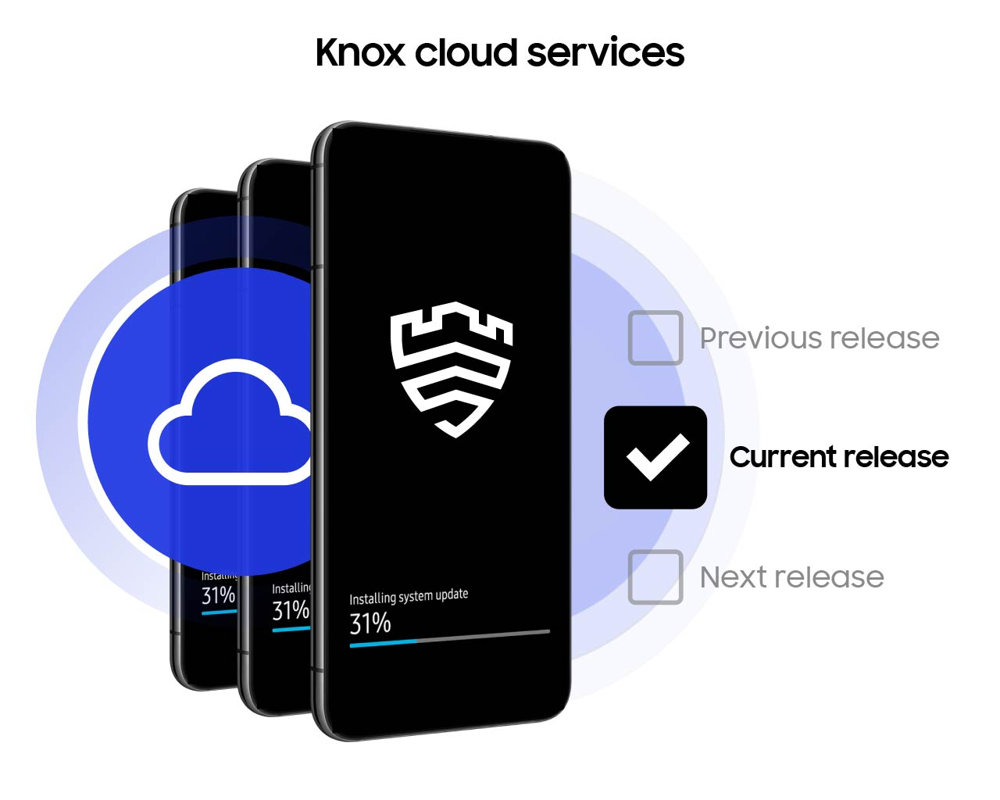
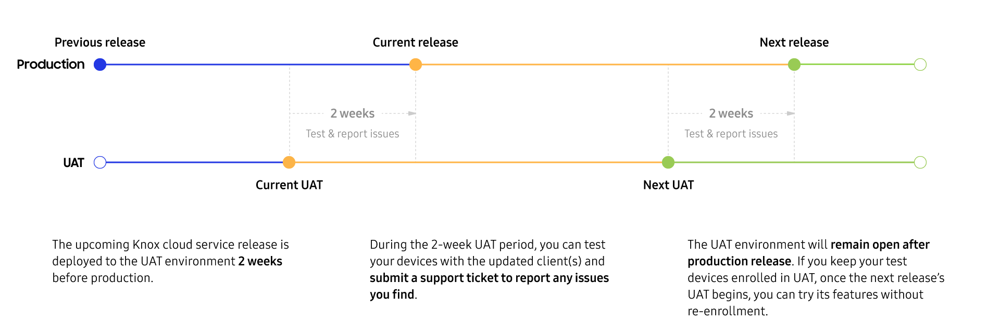

User Acceptance Testing
Last updated August 23rd, 2023
User Acceptance Testing (UAT) is an isolated pre-production cloud environment which provides you early access to the updated client, and new and updated features of the Knox services two weeks prior to the production release. This allows you to test your existing apps and devices to ensure they interoperate smoothly with the upcoming updates.

Benefits of UAT
You can actively utilize this pre-production environment to:
- Test compatibility of your existing devices with the updated client
- Try new upcoming features to familiarize yourself with new upcoming features
- Report any issues with the new client or features of Knox services
By identifying and reporting any potential bugs or issues in advance, you can ensure your existing data and devices will not have an unexpected impact with the production release/update of Knox services.
Supported Samsung Knox solutions
The following Samsung Knox products and services are supported in UAT:
- SamsungKnox.com
- Knox Partner Program
- Knox Admin Portal
- Knox Mobile Enrollment
- Knox Manage
- Knox E-FOTA
- Knox Asset Intelligence
- Knox Configure
- Knox Guard
- Knox Deployment Program — Reseller Portal
- Knox MSP Portal
The following Samsung and Knox products are services aren’t support in UAT:
- Knox Platform for Enterprise
- Knox Capture
- Samsung Care+ for Business
- Galaxy Enterprise Edition devices.
Prerequisites
Ensure your device is:
-
A supported device running an appropriate Knox version
-
Running on Android 13 or higher
- Older versions of Android can be used for Knox Manage, Knox E-FOTA, and Knox Asset Intelligence if you install the client manually (see Manual enrollment in the UAT quickstart for details)
-
Not currently registered and in use in a production environment
-
Galaxy S23 or newer (preloaded with Android 13) to be used for Knox Guard
You cannot have your device registered in both your production environment and the UAT environment at the same time. To use your devices in UAT, please completely unenroll and remove your device from the production environment. Conversely, if you want to use the devices in production, you must unenroll it from UAT first.
Schedule

The UAT environment will be operational 24/7 — the updated client will be available two weeks before the production release of Knox cloud services. During these two weeks, you can test the updated client and upcoming features early and report any issues you find. You can keep the devices registered in UAT and continue using the UAT environment for testing until the next UAT period.
Is this page helpful?